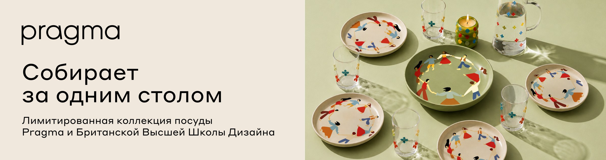
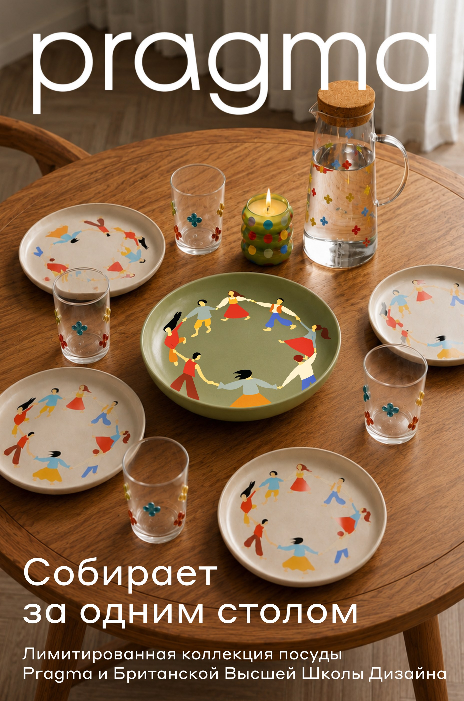
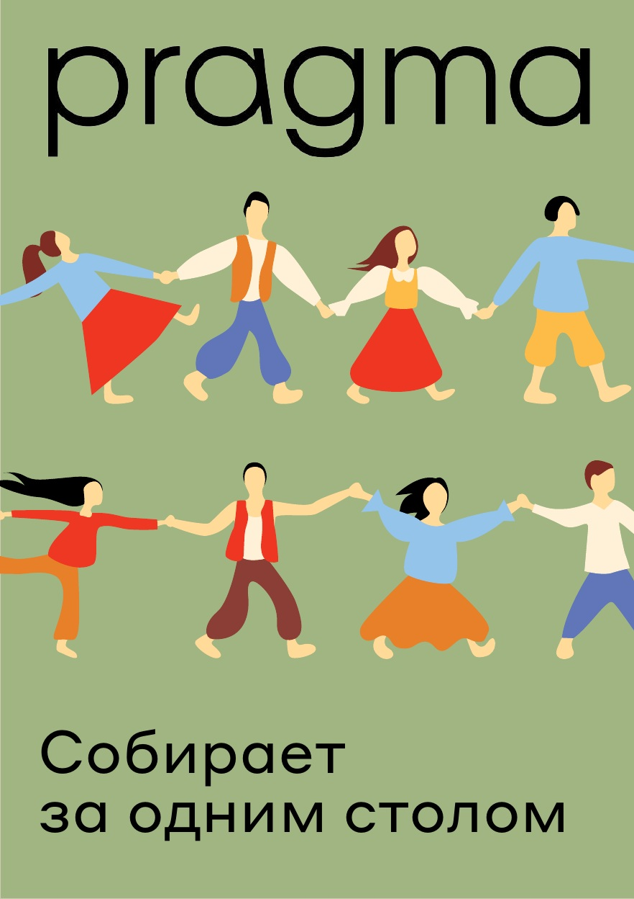
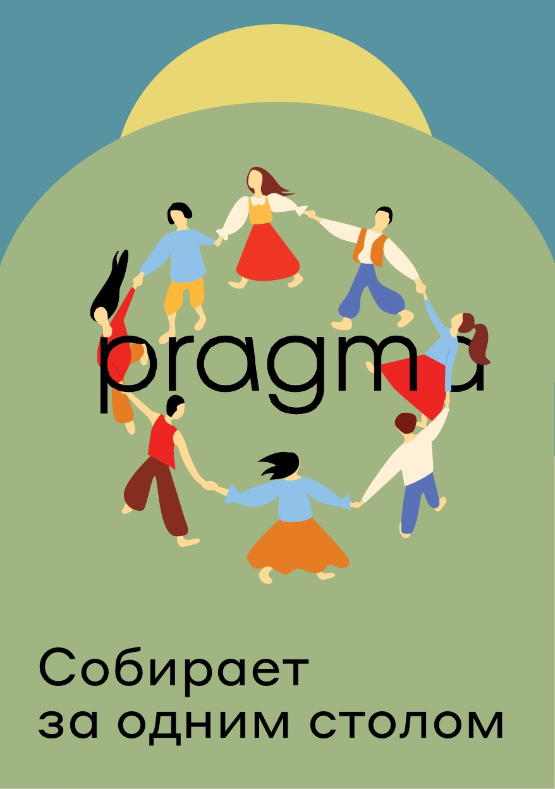
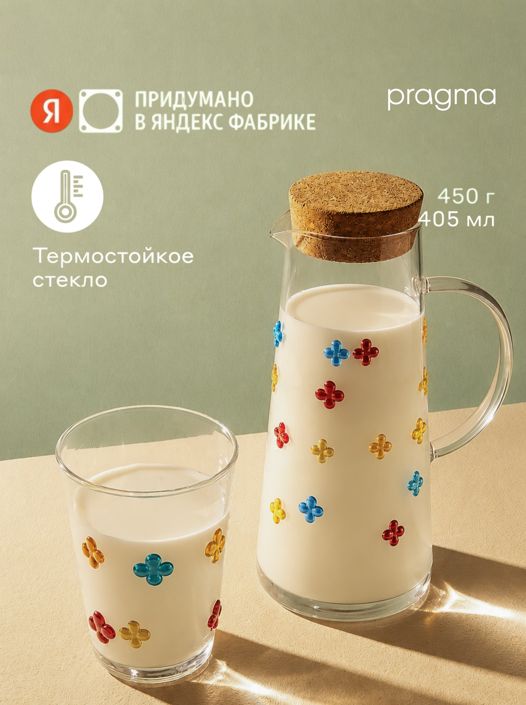
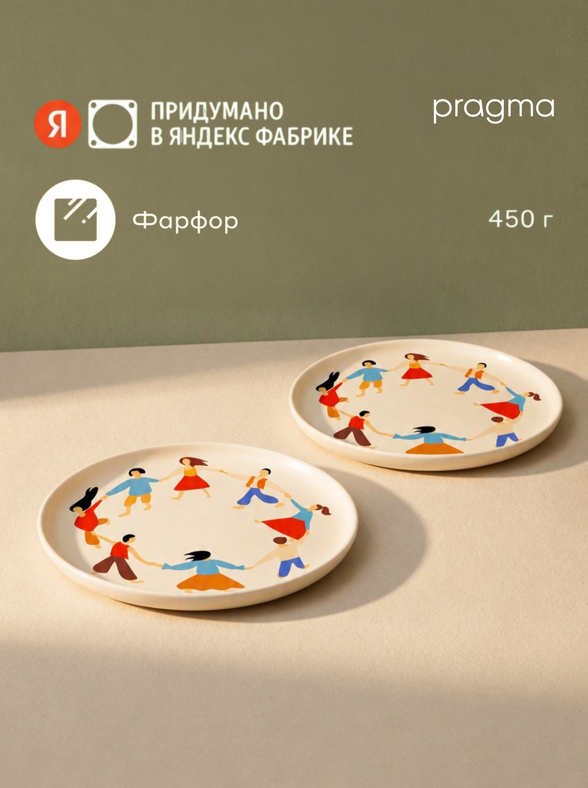
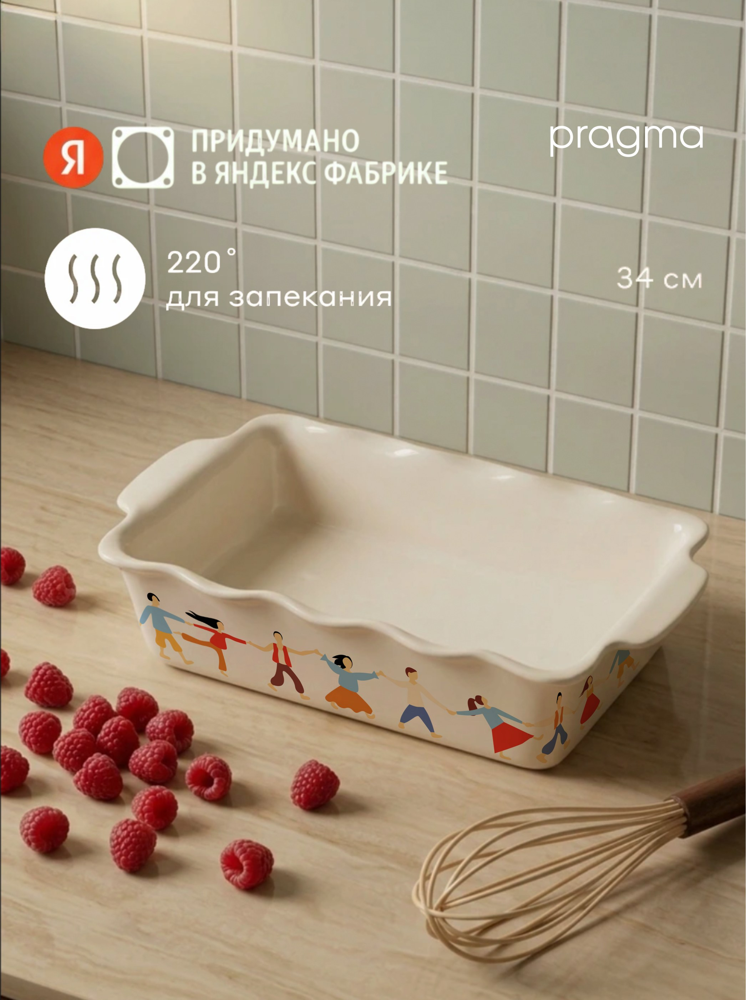
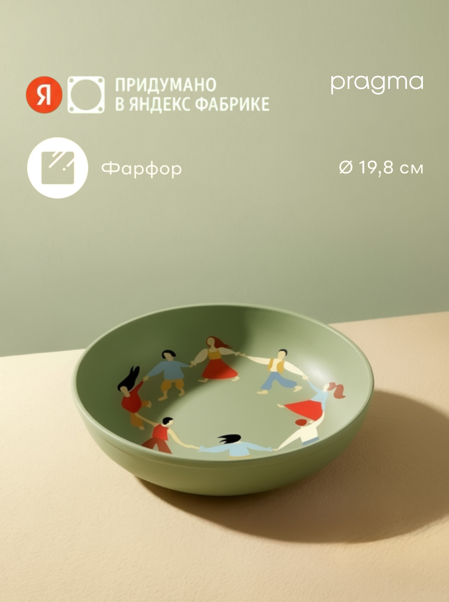
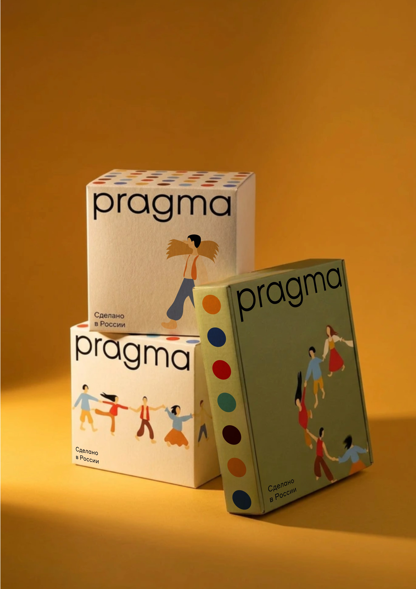

Pragma x БВШД
Лимитированная коллекция
Проект разработан в рамках сотрудничества с Yandex Pragma и представляет собой концепцию праздничной коллекции к Масленице. В неё вошли иллюстрации, оформление посуды, упаковки и декоративных объектов. Основой проекта стала идея Масленицы как праздника, объединяющего людей через общение и совместное времяпрепровождение.






Визуальной метафорой этой идеи стал хоровод. Отдельные люди, двигаясь вместе, образуют единую композицию, сохраняя при этом свою индивидуальность. Этот принцип лёг в основу всей коллекции: от иллюстраций с универсальными персонажами до паттерна, цветовых сочетаний и оформления предметов.






Особое внимание уделено адаптации графики к разным носителям. Круговые композиции продолжают форму посуды, паттерн используется как самостоятельный декоративный элемент, а хоровод становится основным акцентом упаковки. Благодаря этому визуальная система сохраняет целостность, одновременно позволяя каждому объекту иметь собственную композицию.

